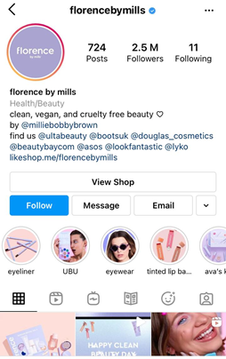
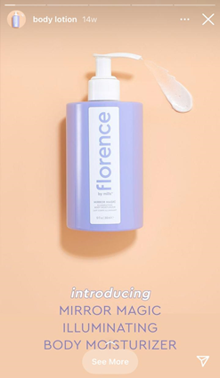
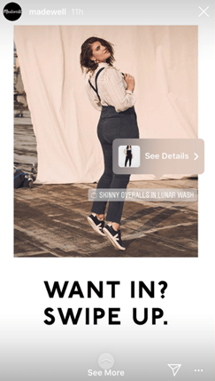
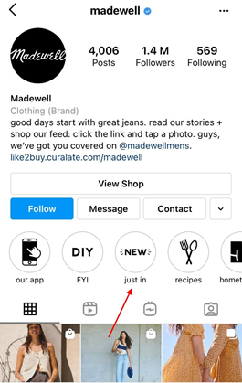
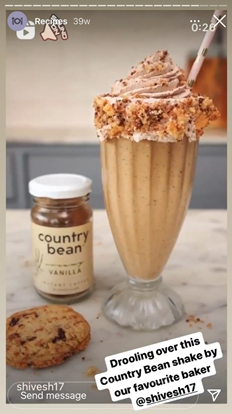
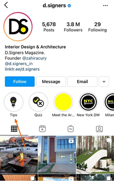
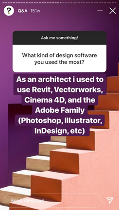
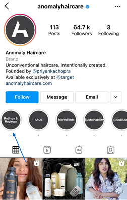
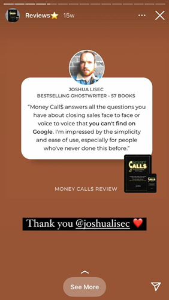

In today’s time, Instagram is the place to be for businesses because it lets you connect and interact with your audience and humanize your brand. As we know it, the latter is a crucial aspect for every business in the 21st century.
To help boost engagement, Instagram offers many interesting tools and features—one of them is story highlights.
Instagram story highlights are collections of the previously posted stories on your profile. But unlike stories, they don’t have a shelf-life of 24 hours and are visible to viewers whenever they visit your profile.
Placed right under your bio, highlights are one of the first things people notice on your profile and can drive first impressions that directly impact purchase decisions. So, if there’s an aspect for you to pay attention to on Instagram, it’s story highlights!
Instagram also provides rich analytics of your stories. In the Insights section of your profile, you’ll find every important metric you’ll need to improve performance—like profile visits, reach, impressions, replies, and more. You can combine the data from here along with key business metrics from other sources like your website analytics to generate more traffic, leads, and sales.
As a business, Instagram Story Highlights should be an integral part of your marketing strategy. Let’s explore five ways you can use them to engage your customers and promote your business:
1. Start with an ‘About us’ highlight
Instagram bio limits you to 150 characters, and you can’t convey every detail about your brand here.
That’s where Instagram story highlights step in. An ‘About us’ highlight is a superb opportunity to explain your brand story—through a series of stories. It helps users understand who you are, what you do, and what products/services you offer right away.
An authentic ‘About us’ highlight can go a long way in setting your brand apart and building a connection with users. @atomandmatter here uses an ‘Our story’ highlight to communicate what its brand is about and its values.

If not ‘About us,’ you can create an FAQ highlight and answer any initial questions viewers may have about your brand. It’s a great way to establish what you represent and your policies.
Here’s how @anomalyhaircare does it.

2. Showcase your products
In a 2019 Facebook survey, 62% of people said they became more interested in a brand or product through Instagram stories. This shows the power stories have to educate people about your product and build interest in it.
A great strategy to show people what you offer is to create dedicated product highlights. You can either create a unique highlight for every product or club all products under one.
Here’s how product highlights help:
- They give viewers a quick look into your offerings.
- If you create different highlights for every product, users can easily navigate and find details about the product of their choice—without having to scroll through your entire feed. This is exactly how @florencebymills showcases its products.

- You can use swipe-up links to take users directly to your website in product stories, as shown below

- If you’ve set up Instagram shopping, you can use the ‘Product’ sticker and tag the product shown in the Story like @madewell. By clicking on the tag, people can find product details and a link to your website.

- You can inform people about new launches through highlights like @madewell.

Product highlights can be huge attractions for both new and old visitors. Given how accessible they are, users are more likely to click on them to see what you offer and whether it interests them.
3. Make tutorials or how-to’s
Tutorials showing your product use-case are excellent ways to appeal to audiences. They give viewers an understanding of your product, the benefits it offers, and how exactly they can use it.
By putting these videos in your highlights, you allow visitors to watch them anytime, thus opening opportunities to win more clients.
@countrybeancoffee has a highlight of recipes made using their products—it’s perfect for showing how you can use their product in new and interesting ways.

To take it up a notch, you can show your customers using your product. This can reaffirm potential clients’ faith in your product and entice them into buying it.
Another way to build your brand and a loyal audience for yourself on Instagram is to provide tips and how-to guides on your story highlights, like @d.signers here.

Creating tutorials might seem like a lot of work, but there are a lot of easy-to-use Instagram tools that make this easy.
This way, you get to educate your followers, build credibility, and establish yourself as an industry expert by showcasing your knowledge. Don’t forget to use the swipe-up option when it’s relevant to try to drive people to sign-up for something of value here as well.
For example, if you give helpful tips/info and then offer a free step-by-step PDF download if they sign up for your email list, this will allow you to gather their email and use email marketing to further build the relationship.
If this sounds like a good idea but you don’t have any idea what email platform would be best for this, check out this list to learn your options.
4. Create a Q&A highlight
Instagram Stories provide many engagement-boosting features like polls, quiz stickers, emoji sliders, and the question sticker—which opens many possibilities for interaction.
Just like online web forms, this sticker allows you to ask your audience questions and answer them either via DM or on your stories—without revealing their identity.
Having Q&A sessions on Instagram is a good practice to build and enhance your presence on the platform. It shows your expertise, allows you to solve your audience’s pain points, and clarifies doubts about your brand and industry.
Moreover, it shows you care about your audience and take out the time to interact with them.
Over time, you can compile all stories containing important answers into a Highlight—so all new and old visitors can access them anytime they want.
For instance, @d.signers has an extensive Q&A highlight where it answered questions about architecture, design, and careers in this field.

5. Share reviews and testimonials
Reviews and testimonials instantly grab people’s attention and what better place to showcase them than an Instagram highlight?
It’s simple—post screenshots of your customers’ reviews on your stories regularly and put your best reviews together in a highlight like @anomalyhaircare.

This section will help build trust and credibility with new visitors and those thinking of making a purchase. It will show them your product/service promises, how it can improve their lives and why they should buy from or follow you over your competitors.
Again, customer reviews provide an excellent opportunity to use the “See more” option—to take your followers directly to the product your client is talking about in the review, as shown here by @shreyapattar.

Conclusion
Fun, creative, and accessible—Instagram story highlight is one of the best tools to showcase and promote your business.
Follow the five ways outlined in this article to use Instagram Highlights for your business profile and kick it up a notch. Not only will they improve the look and feel of your feed, but they will also be a huge help and customer magnet for sales.
About the Author
Rachel Bowland is a content editor at Creatiwitt who likes to write about marketing and design. In her free time, she likes to go climbing.
Leave a Reply